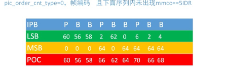
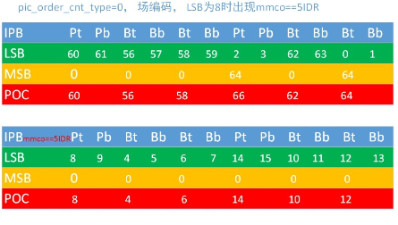
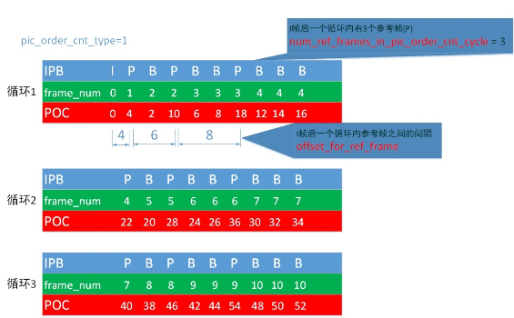

h.264的POC计算
视频编码顺序与视频的播放顺序，并不完全相同
视频编码时，如果采用了B帧编码，由于B帧很多时候都是双向预测得来的，这时会先编码B帧的后向预测图像（P帧），然后再进行B帧编码，
因此会把视频原来的播放顺序打乱，以新的编码顺序输出码流
而在解码断接收到码流后，需要把顺序还原成原本的播放顺序，以输出正确的视频
在编解码中，视频的播放顺序序号叫做POC（picture order count）
POC有两种类型：
1、把POC的低位编进码流内 （pic_order_cnt_type = 0）
2、依赖frame_num求解POC （pic_order_cnt_type = 1）
对于第一种类型，POC的低位pic_order_cnt_lsb可以从码流内得到，而POC的高位PicOrderCntMsb则要求解码器自行计数
计数方式依赖于前一编码帧（PrevPicOrderCntMsb与PrevPicOrderCntLsb），代码如下
//Calculate the MSBs of current pictureif( img->pic_order_cnt_lsb < img->PrevPicOrderCntLsb &&( img->PrevPicOrderCntLsb - img->pic_order_cnt_lsb ) >= ( MaxPicOrderCntLsb /2) )
img->PicOrderCntMsb = img->PrevPicOrderCntMsb +MaxPicOrderCntLsb;elseif( img->pic_order_cnt_lsb > img->PrevPicOrderCntLsb &&( img->pic_order_cnt_lsb - img->PrevPicOrderCntLsb ) > ( MaxPicOrderCntLsb /2) )
img->PicOrderCntMsb = img->PrevPicOrderCntMsb -MaxPicOrderCntLsb;elseimg->PicOrderCntMsb = img->PrevPicOrderCntMsb;
可以对比下图分析

如果序列内出现了mmco==5，
如果是场模式，并且出现在底场，PrevPicOrderCntMsb与PrevPicOrderCntLsb都要清零
如果出现在顶场，只需要清零PrevPicOrderCntMsb
如果mmco==5出现在帧模式，也是只清零PrevPicOrderCntMsb
另外如果出现了IDR，那么PrevPicOrderCntMsb与PrevPicOrderCntLsb都要清零
代码如下
//1stif(img->idr_flag) |
可以对比下图分析

对于第二种类型，是通过frame_num来计算得出POC
在解析步骤之前通过下图来分析一下帧序列结构

该序列分3个循环，
除开I帧外，每个循环有相同的结构其中frame_num是由解码器计数的，这里不在讨论范围内，直接拿来用，
另外有两个参数是从码流内（sps）获取：
num_ref_frames_in_pic_order_cnt_cycle 除I帧外，每个循环内有多少个参考帧（P帧）
offset_for_ref_frame[i] 一个循环内参考帧之间的间隔
假设我们需要计算POC为42的B帧的poc值
有如下步骤：
1、判断IDR，mmco==5
2、根据frame_num获取AbsFrameNum，如果是B帧则需要减一
3、计算POC，其中又分为以下几个步骤：
- 计算一个循环的长度，即offset_for_ref_frame[i]所有元素加起来，4+6+8 = 18
- 计算AbsFrameNum所在循环的位置（9-1）/ 3 = 2 ，即第三个循环
- 计算AbsFrameNum在循环内的偏移（9-1）%3 = 2，偏移2，即需要加上offset_for_ref_frame[0],offset_for_ref_frame[1]两个
- 计算前两个循环的长度 2x18 = 36
- 前两个循环长度加上偏移长度 36 + 4 + 6 = 46
- 由于是B帧，最后要加上offset_for_non_ref_pic，offset_for_non_ref_pic = -2*(连续B帧的数量)，而这里由于有多个连续B帧，所以取平均值2，即 offset_for_non_ref_pic = -2*2 = -4
- 最后加上delta_pic_order_cnt[0] = 0，delta_pic_order_cnt[1] = 0 ， 即POC = 42
代码如下：
case1://POC MODE 1//1stif(img->idr_flag)
{
img->FrameNumOffset=0;//first pix of IDRGOP,img->delta_pic_order_cnt[0]=0;//ignore first deltaif(img->frame_num) error(“frame_num != 0 in idr pix”, -1020);
}else{if(img->last_has_mmco_5)
{
img->PreviousFrameNumOffset =0;
img->PreviousFrameNum =0;
}if(img->frame_num
{//not first pix of IDRGOPimg->FrameNumOffset = img->PreviousFrameNumOffset + img->MaxFrameNum;
}else{
img->FrameNumOffset = img->PreviousFrameNumOffset;
}
}//2ndif(active_sps->num_ref_frames_in_pic_order_cnt_cycle)
img->AbsFrameNum = img->FrameNumOffset+img->frame_num;elseimg->AbsFrameNum=0;if(img->disposable_flag && img->AbsFrameNum>0)
img->AbsFrameNum–;//3rdimg->ExpectedDeltaPerPicOrderCntCycle=0;if(active_sps->num_ref_frames_in_pic_order_cnt_cycle)for(i=0;i<(int) active_sps->num_ref_frames_in_pic_order_cnt_cycle;i++)
img->ExpectedDeltaPerPicOrderCntCycle += active_sps->offset_for_ref_frame[i];if(img->AbsFrameNum)
{
img->PicOrderCntCycleCnt = (img->AbsFrameNum-1)/active_sps->num_ref_frames_in_pic_order_cnt_cycle;
img->FrameNumInPicOrderCntCycle = (img->AbsFrameNum-1)%active_sps->num_ref_frames_in_pic_order_cnt_cycle;
img->ExpectedPicOrderCnt = img->PicOrderCntCycleCnt*img->ExpectedDeltaPerPicOrderCntCycle;for(i=0;i<=(int)img->FrameNumInPicOrderCntCycle;i++)
img->ExpectedPicOrderCnt += active_sps->offset_for_ref_frame[i];
}elseimg->ExpectedPicOrderCnt=0;if(img->disposable_flag)
img->ExpectedPicOrderCnt += active_sps->offset_for_non_ref_pic;if(img->field_pic_flag==0)
{//frame piximg->toppoc = img->ExpectedPicOrderCnt + img->delta_pic_order_cnt[0];
img->bottompoc = img->toppoc + active_sps->offset_for_top_to_bottom_field + img->delta_pic_order_cnt[1];
img->ThisPOC = img->framepoc = (img->toppoc < img->bottompoc)? img->toppoc : img->bottompoc;//POC200301}elseif(img->bottom_field_flag==0)
{//top fieldimg->ThisPOC = img->toppoc = img->ExpectedPicOrderCnt + img->delta_pic_order_cnt[0];
}else{//bottom fieldimg->ThisPOC = img->bottompoc = img->ExpectedPicOrderCnt + active_sps->offset_for_top_to_bottom_field + img->delta_pic_order_cnt[0];
}
img->framepoc=img->ThisPOC;
img->PreviousFrameNum=img->frame_num;
img->PreviousFrameNumOffset=img->FrameNumOffset;break;
计算POC还有一种类型，这种最简单，直接通过frame_num推导，应用在没有连续的非参考帧的情况下（即一个间隔最多只能包含一个非参考帧）。
即没有B帧的，这种最简单，直接通过frame_num推导，
但是应该注意，在这种情况下不存在连续 的非参考图象（注释），且解码输出的顺序和显示输出顺序一致（注释），意思就是说不出现B帧，但可以出现非参考的P场，这也是为什么当 nal_ref_idc=0的时候
tempPicOrderCnt = 2 * ( FrameNumOffset + frame_num ) –1的情况。这里保证了参考场的POC始终为偶数，并且大于同帧的另外一个场
代码如下
case2://POC MODE 2if(img->idr_flag)//IDR picture{
img->FrameNumOffset=0;//first pix of IDRGOP,img->ThisPOC = img->framepoc = img->toppoc = img->bottompoc =0;if(img->frame_num) error(“frame_num != 0 in idr pix”, -1020);
}else{if(img->last_has_mmco_5)
{
img->PreviousFrameNum =0;
img->PreviousFrameNumOffset =0;
}if(img->frame_num
img->FrameNumOffset = img->PreviousFrameNumOffset + img->MaxFrameNum;elseimg->FrameNumOffset = img->PreviousFrameNumOffset;
img->AbsFrameNum = img->FrameNumOffset+img->frame_num;if(img->disposable_flag)
img->ThisPOC = (2*img->AbsFrameNum -1);elseimg->ThisPOC = (2*img->AbsFrameNum);if(img->field_pic_flag==0)
img->toppoc = img->bottompoc = img->framepoc = img->ThisPOC;elseif(img->bottom_field_flag==0)
img->toppoc = img->framepoc = img->ThisPOC;elseimg->bottompoc = img->framepoc = img->ThisPOC;
}if(!img->disposable_flag)
img->PreviousFrameNum=img->frame_num;
img->PreviousFrameNumOffset=img->FrameNumOffset;break;